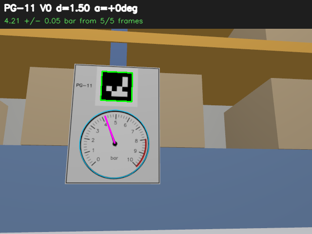

warehouse_pressure_round · mission 20261115_130358_ed42 ·
state ABORTED interrupted (SIGINT)
47.8 s sim / 53.0 s wall ·
source: Gazebo Harmonic simulation, values read by OpenCV from simulated camera frames
Gauges 1: accepted 1, unresolved 0 · observations 1 · viewpoints 1 · decisions: ACCEPT: 1
| Gauge | Result | Obs. | Viewpoints | Decisions |
|---|---|---|---|---|
| PG-11 | 4.21 bar (heuristic σ 0.05), alarm NORMAL | 1 | 1 | ACCEPT |
4.21 bar (heuristic σ 0.05), alarm NORMAL
